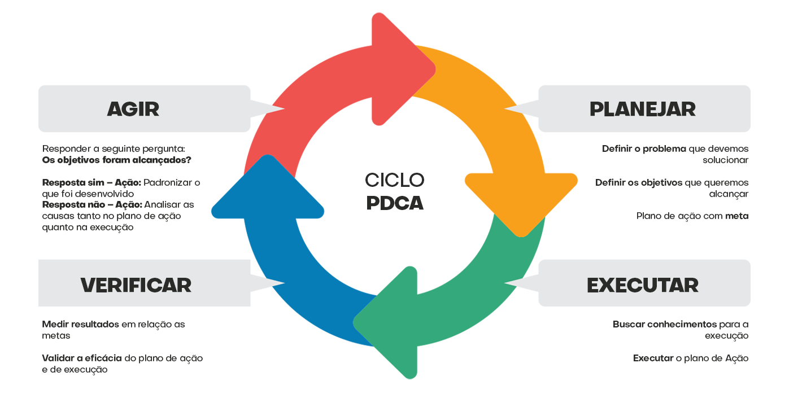
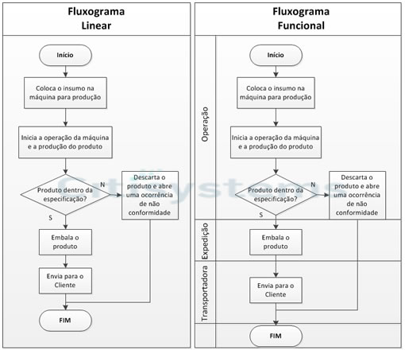
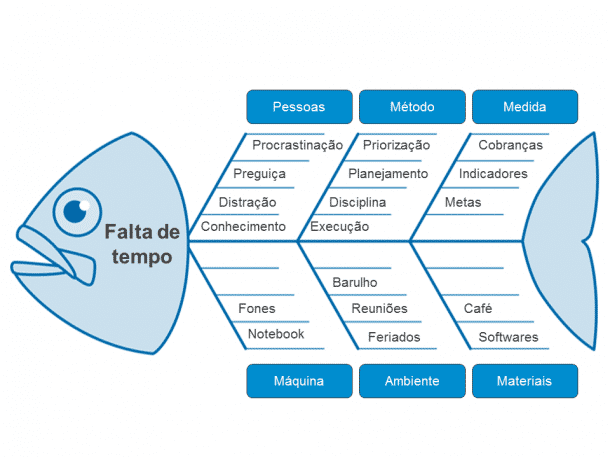

1.PDCA
- PDCA Esse método está mais ligado às etapas práticas na execução de algum projeto. Por isso,
é bastante aplicado quando se precisa dar o primeiro passo ou vencer uma barreira de produtividade.
A principal vantagem do Ciclo PDCA é sua simplicidade conceitual e praticidade,
como pode ser notado pela tradução de sua sigla,
originalmente em inglês:
- Plan (planejar): estabelecer o que será realizado e o objetivo;
- Do (executar): realizar o plano;
- Check (averiguar): avaliar os resultados obtidos;
- Act (agir): melhorar pontos de acordo com resultado.

2.5W2H
- Apesar de seu complicado nome, a ferramenta 5w2h é uma das mais simples e intuitivas de serem usadas.
Da mesma forma, também é um dos recursos mais versáteis e poderosos da lista, podendo ser aplicado em virtualmente qualquer situação que se deseje uma compreensão mais abrangente de um objeto de estudo. O seu nome é uma indicação das iniciais em inglês das sete perguntas cruciais que estruturam a análise pelo método.
As cinco perguntas iniciais começam originalmente com W:- What ? (O que?)
- Why? (Por quê?)
- Where? (Onde?)
- When? (Quando?)
- Who? (Quem?)
Então, partimos para as duas últimas questões, iniciadas com a letra H:
- How? (Como?)
- How much? (Quanto?)
Como se pode perceber, por meio das perguntas listadas, é possível orientar-se facilmente sobre as características de uma situação, suas causas e seus efeitos.

3.Fluxograma
O uso do fluxograma é praticamente imprescindível para qualquer empresa que busque ordem e padronização em suas atividades, características intrínsecas à gestão da qualidade. A razão de tamanha importância dá-se porque o fluxograma é crucial para mapear e controlar as etapas dos processos em uma empresa e evitar problemas, como refação. Ao usar um fluxograma de processo, é possível representar visualmente a trajetória real de produção de um produto ou serviço, assim como o caminho projetado idealmente para que a ação seja otimizada. Dessa forma, o fluxograma descreve cada passo e etapa de uma série de atividades, da mesma maneira que atribui os responsáveis por processo. Aplicativos atuais de gestão de processos já contam com melhorias no fluxograma, como o workflow.

4.Diagrama de Pareto
O diagrama de Pareto é uma representação gráfica de uma relação considerando a proporção 80/20. Ao utilizá-lo, é estabelecido que 80% dos resultados obtidos em uma agência são causados por 20% das operações realizadas. Desse modo, essa ferramenta serve como forma de diagnosticar as causas prováveis e urgentes de um problema ou uma situação negativa. Como resultado, é possível focar os investimentos e esforços no que realmente importa e afeta a maior parte do desempenho da empresa.

5.Diagrama de Ishikawa
O Diagrama de Ishikawa é uma das ferramentas da Qualidade e também é conhecida como Diagrama de Espinha de Peixe, por causa do seu formato, ou Diagrama de Causa e Efeito, por ser composta pelo problema e suas possíveis causas. A ferramenta é usada para encontrar, organizar, classificar, documentar e exibir graficamente as causas de um determinado problema, agrupados por categorias, que facilitam o brainstorming de ideias e análise da ocorrência. Como as causas são hierarquizadas, é possível identificar de maneira concreta as fontes de um problema. Um brainstorming com a equipe pode incentivar uma análise aprofundada sobre o problema, que envolva a maioria das possíveis causas de um problema, pois promove a discussão, e consequente melhoria do processo. Algumas palavras chave utilizadas na elaboração do Diagrama de Ishikawa são:
